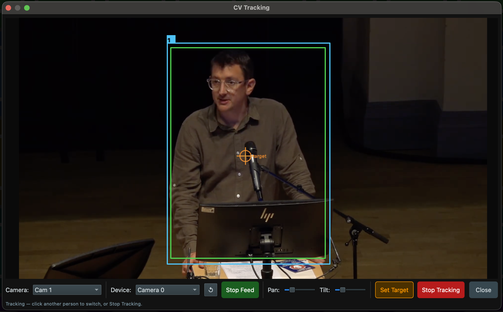

CV tracking
Let the PC app watch the camera's video and keep a subject framed for you — while you keep flying the slider and zoom.
Where look-at follows a calibrated point in space, CV tracking follows what the camera actually sees. The PC app takes the camera's video feed, finds the subject, and drives pan and tilt to keep it framed — closing the loop with computer vision. It runs only in the PC app (it needs the video feed and the processing).
Two trackers
| Tracker | How it works |
|---|---|
| Optical flow | Click any point or object in the feed to lock on. The tracker follows that patch of image frame to frame — good for a specific object or a spot on a subject. |
| YOLO person detection | Detects people
automatically and follows a presenter, using the ultralytics
YOLO model. Good when you just want "keep the person in frame". |
Human + machine at once
The clever part: CV drives pan and tilt only. Its commands carry an axis mask, so the vision loop and your joystick can drive the same mount at the same time without fighting. The machine keeps the subject centred while you keep manual control of the slider and zoom — riding the move and the framing by hand while pan/tilt look after themselves.

Using it
- Set which camera CV drives — Config → CV tracking mount (1–5). Its video feed needs to be reachable by the PC.
- Open the CV tracking window in the PC app.
- Either click a point/object to lock optical-flow tracking, or enable YOLO to follow a detected person.
- Fly the slider and zoom by hand as the shot develops — pan/tilt track automatically.
What you need installed
CV needs a couple of extra Python packages on the PC (they're in the app's requirements):
python3 -m pip install opencv-contrib-python # trackers
python3 -m pip install ultralytics # YOLO person detectionThe YOLO model (~6 MB) downloads automatically the first time you enable person detection. Optical-flow tracking works without it. See PC app for the full setup.
Next, the surfaces you drive all this from — starting with the PC app.